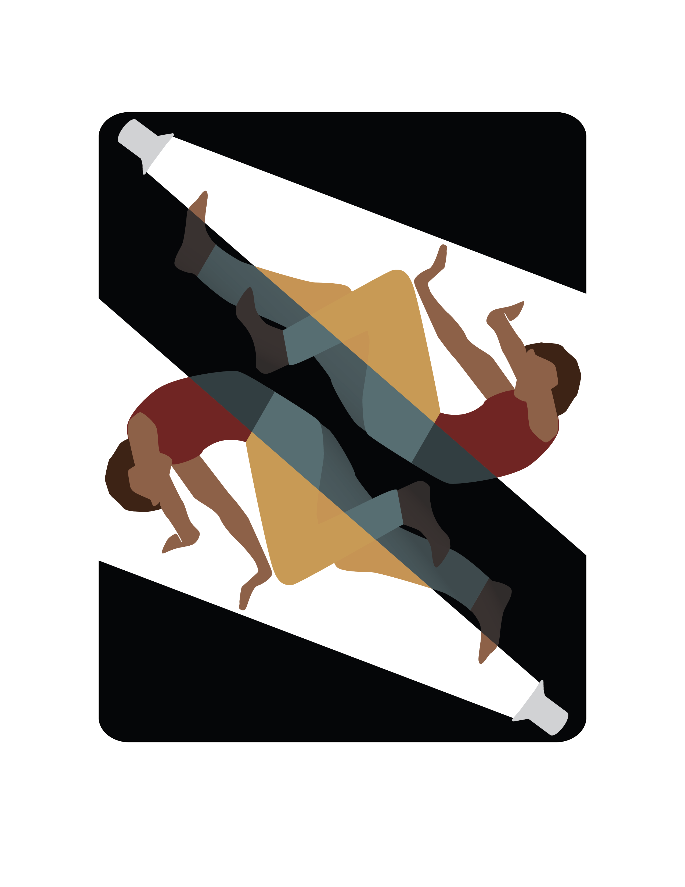

:quality(70)/cloudfront-us-east-1.images.arcpublishing.com/uscannenberg/BWHLMYORYVDV3CNPHJI5NDMXZM.JPG)


:quality(70)/cloudfront-us-east-1.images.arcpublishing.com/uscannenberg/5PFK3NFLDZD6PESBIZX2ICOFCQ.jpeg)
:quality(70)/cloudfront-us-east-1.images.arcpublishing.com/uscannenberg/JNOXVH4HBNAV7CZEBBQ4MCLKKI.JPG)


Informational Video: I created this informational motion graphic myself based off the fictional show 'Succession.' As I was creating this, I specifically tried to replicate the style of animation found in several Vox videos. After studying clips from these videos I also incorporated colors from the show to create the final informational video.
I created this illustration to accompany an article about the danger women face in rideshares. After reading the article, I brainstormed ideas, submitted thumbnails and rough sketches for approval from my editor, and made edits based on feedback for the final published illustration.
This was my entry to a creative magazine for the theme "Exposure". After brainstorming, I photographed a model and digitally compiled the results into my own reference photo before creating the final design.
